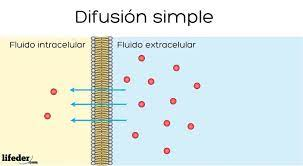
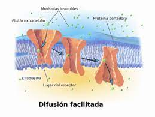
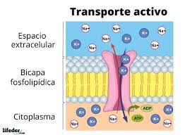

En la difusión simple, las moléculas se mueven a través de la membrana desde una región de mayor concentración a una de menor concentración, sin requerir energía adicional.
La difusión facilitada implica el movimiento de moléculas a través de la membrana con la ayuda de proteínas transportadoras. Este proceso también ocurre a favor del gradiente de concentración y no requiere energía adicional.
En el transporte activo, las moléculas se mueven a través de la membrana en contra de su gradiente de concentración, lo que requiere energía en forma de ATP (trifosfato de adenosina). Este proceso es crucial para mantener la homeostasis celular y concentraciones específicas de sustancias.
